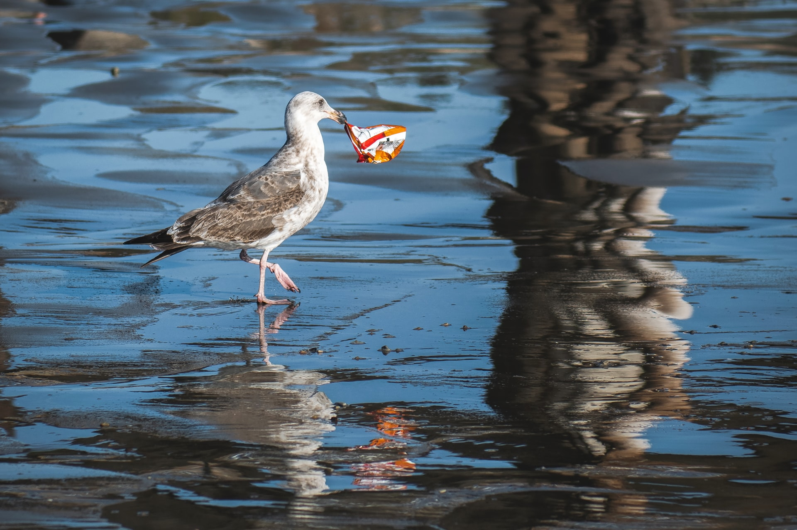

Chemical contamination, or nutrient pollution, is concerning for health, environmental, and economic reasons. This type of pollution occurs when human activities, notably the use of fertilizer on farms, lead to the runoff of chemicals into waterways that ultimately flow into the ocean. The increased concentration of chemicals, such as nitrogen and phosphorus, in the coastal ocean promotes the growth of algal blooms, which can be toxic to wildlife and harmful to humans. The negative effects on health and the environment caused by algal blooms hurt local fishing and tourism industries.